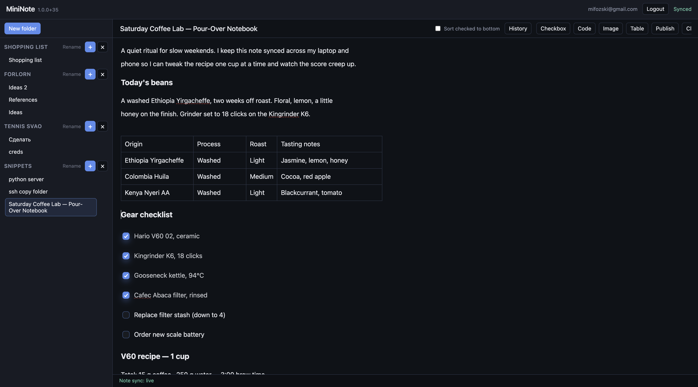

MiniNote is a fast, offline-first note-taking web app that keeps every device in sync in real time. Notes live in folders, support rich-text editing, and can be published behind a stable or random link with a single click. Conflict-free sync is powered by Loro CRDTs, so simultaneous edits from multiple devices merge cleanly without a central source of truth.
The client is a Vite-built TypeScript PWA using ProseMirror for the editor and loro-prosemirror for CRDT bindings, with Workbox handling precaching and offline support. The server is a Node.js WebSocket service backed by better-sqlite3 for durable storage and the Google Auth Library for token verification.